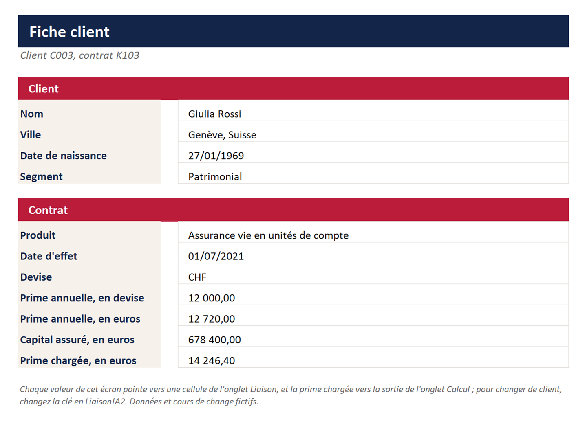
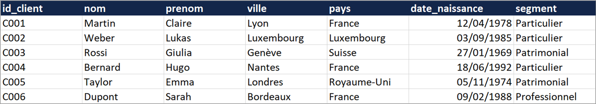
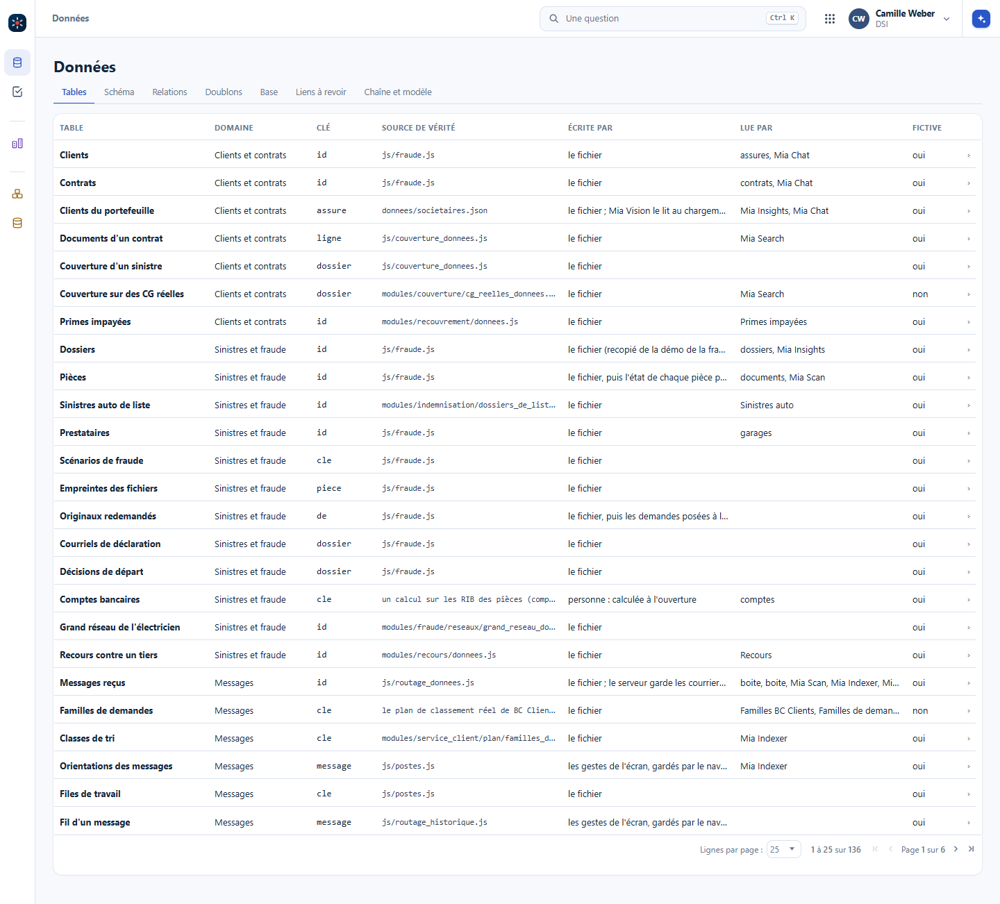
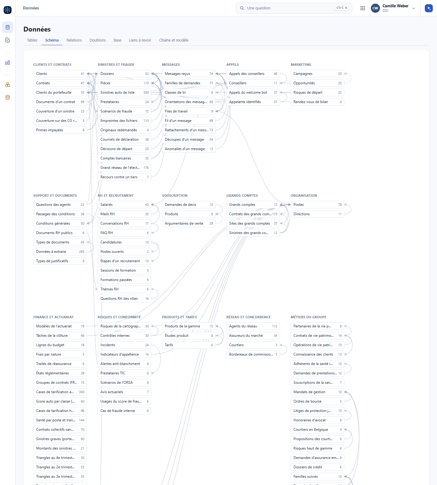

Dans un classeur Excel, on peut déjà avoir un back et un front. Des onglets de tables propres, à part ; un onglet qui rassemble, pour une clé, ce qu'il faut sur une ligne ; et un onglet joli, fait pour être lu. C'est ce que l'informatique appelle base de données, API et interface, et c'est comme ça que se fait le génie industriel.
Des onglets de tables propres, une table par onglet : les clients, les contrats, les devises.
Un onglet qui, pour une clé (l'identifiant d'un client, une devise pour un taux de conversion), récupère sur une même ligne toutes les informations, par des RECHERCHEV. Plusieurs si besoin : le client, puis son contrat dans une autre table, puis le cours de sa devise. Ce sont presque des jointures.
Un onglet joli et convivial, cellules fusionnées et couleurs comme on veut. Mais chaque case pointe vers une cellule précise de la ligne intermédiaire.
Sans couche intermédiaire, les formules de l'interface deviennent énormes : chaque case refait sa recherche, et personne ne peut plus les relire. De petites formules dans l'interface ne sont pas interdites, il n'y a pas de règle absolue ; ce qui compte, c'est que la recherche se fasse à un seul endroit. Un calcul, lui, a son propre onglet entre la liaison et l'écran : le chapitre suivant le montre, une étape par ligne.


La ligne de l'onglet Liaison, telle qu'Excel l'affiche en français : la clé en A2, puis une recherche par cellule.
A2 C003 la clé, choisie dans la liste des clients
B2 =RECHERCHEV($A$2;Clients!$A$2:$G$7;2;FAUX) le nom du client
H2 =INDEX(Contrats!$A$2:$A$7;EQUIV($A$2;Contrats!$B$2:$B$7;0))
le contrat du client : sa clé n'est pas en 1re colonne
I2 =RECHERCHEV($H$2;Contrats!$A$2:$G$7;3;FAUX) le produit du contrat
N2 =RECHERCHEV($K$2;Devises!$A$2:$D$5;3;FAUX) le cours de la devise du contrat
O2 =L2*N2 la prime en eurosTélécharger le classeur d'exemple
Changez la clé dans l'onglet Liaison, cellule A2 : prenez C005. Que devient l'écran ? Puis ajoutez une devise dans l'onglet Devises et un contrat qui l'emploie : quelles formules faut-il changer ?
L'écran montre Emma Taylor, son contrat de prévoyance en livres sterling, et sa prime convertie en euros : rien n'a été touché dans l'écran. Pour la nouvelle devise, il faut élargir les plages des recherches, qui s'arrêtent à la dernière ligne de chaque table. En mettant chaque table sous forme de tableau Excel, et en écrivant les recherches sur le nom du tableau, les plages suivent les tables toutes seules : c'est un premier pas vers une vraie base.
Bien séparés, ce sont les trois pièces d'un outil. La base de données, ce sont des tables relationnelles structurées. L'API, c'est une fonction : je donne un input, je récupère un output. L'interface, c'est ce que l'utilisateur voit et touche.
Les tables et les calculs. La cuisine reste en cuisine : le client ne voit pas comment le plat se fait.
L'API : il prend la commande et rapporte le plat. Une commande précise, un plat précis.
L'interface : c'est la table du client. On ne fait pas la cuisine dans la salle.
Une page HTML avec du JavaScript peut tout mélanger, comme un classeur. Ça dépend du projet : pour un petit calcul, ce n'est pas grave. Pour un outil de tarification ou un outil ALM, on ne bricole pas.
Vision suit ce découpage. La base, ce sont ses tables, documentées une par une : la clé, les colonnes, la source de vérité, qui écrit et qui lit. Le poste DSI les montre dans l'écran Données, avec leur schéma. Le calcul vit dans des moteurs à part, les fonctions CL_ (triangles, GLM, mortalité, simulation, solvabilité) : ni écran ni mémoire, des entrées et des sorties en objets simples, et chacune se vérifie sur des cas connus sans ouvrir Vision. C'est la cuisine et son serveur. Les écrans, l'atelier, l'ALM, sont la salle : ils appellent les moteurs et montrent ce qu'ils rendent.


Dans Vision : #/dsi, au poste DSI, puis l'onglet Schéma.
Appliquez le découpage même dans Excel : la transition vers de vrais outils sera douce, parce que les tables, les recherches et l'écran seront déjà séparés. Les limites d'Excel arrivent ensuite d'elles-mêmes.
Les sorties d'une API sont souvent du JSON, des données structurées : un bilan entier tient dans un JSON. Ou du XML : les états QRT remis en XBRL sont du XML. Avec l'IA, on peut donner le classeur et demander « fais-moi une interface jolie » : on continue à manipuler les données dans Excel, et l'interface n'est plus Excel. Le but n'est pas de se passer d'Excel.
La modularité ne date pas de l'informatique. Descartes, dans le Discours de la méthode (1637), en fait son deuxième précepte : « diviser chacune des difficultés que j'examinerais, en autant de parcelles qu'il se pourrait, et qu'il serait requis pour les mieux résoudre ». En développement, il y a des développeurs front-end et des développeurs back-end, et entre eux un contrat d'interface, l'API : tu me donnes tel input, je te rends tel output ; ce que je fais dans ma cuisine ne te regarde pas.
Où mettre un calcul ? Une moyenne de dix nombres affichés à l'écran, back ou front ? Ça dépend du besoin : s'il y a des valeurs manquantes, une pondération, la moyenne a des règles, et ces règles se décident une fois. C'est une petite question. Un calcul actuariel complexe, lui, va côté back-end : c'est le chapitre suivant, Calculer dans le back, stocker les résultats.
L'écran d'un outil de tarification affiche la prime moyenne d'un segment, calculée dans la page à partir des primes affichées. Qu'est-ce qui peut mal tourner ?
L'écran n'affiche souvent qu'une page de la table, ou une liste filtrée : la moyenne ne porte alors que sur ce qui est visible. Et une prime moyenne se pondère, par l'exposition par exemple. Les deux règles, sur quoi on moyenne et avec quel poids, se décident une fois dans le back, et l'écran affiche le résultat.